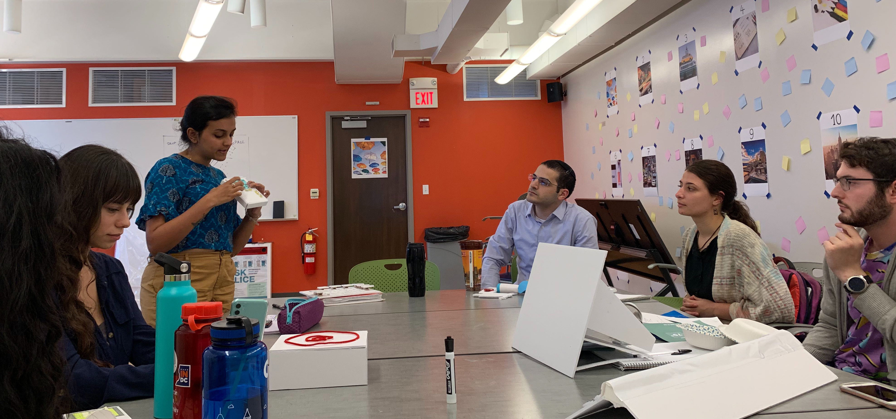
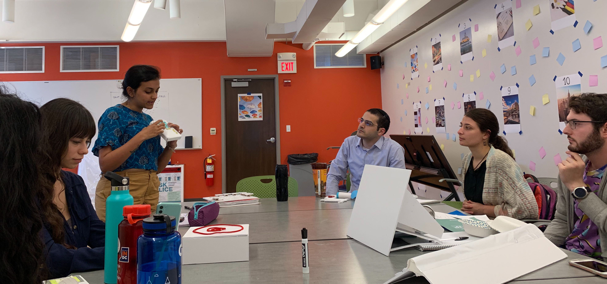

A project redesigning interactions with controls users interact with everyday
Problem: How can we redesign a control such that it considers the user’s intent, context, behavior, environment, and physical limitations appropriately? How can we allow the user to apply knowledge of human perception and create controls that are elegant, intuitive and easily learned?
Solution: A control that provides the user with more perceptual affordance, feedforward, and feedback as well as a more interactive experience.


I was assigned to redesign the controls of a thermostat and we had to start off the project by picking an instance of a thermostat, one that did not create a good interaction for its users. The instance I chose was one I interacted with regularly in my room at the MHCI Lab. The main pain point in the existing thermostat was the lack of feedback. It also lacked perceptual affordance, which allows users to understand what the control can do or achieve. Lastly, it lacked feedforward, so users couldn't perceive the consequences of their actions.
I generated two key insights:

 

For my first iteration, the potential improvements that I thought of were adding a display for the current temperature to provide feedback to the users, using a slider for temperature control to retain the original form of temperature control and allowing the user to set the maximum and minimum temperature to give them the ability to set the range in which the thermostat can be set within and provide more feedforward to the users.
I also added an additional feel feature as feedback to the user to feel the temperature that the user may want to set it to. The thermostat was a non-programmable one that is, it didn’t automatically sense the temperature and set it, but instead, the user had to do it themselves.
Feedback: My first iteration did not succeed in meeting the user needs effectively as the design wasn’t intuitive enough and did not provide enough feedforward. The controls also lacked visual coupling and were sparsely placed. Also, the fact that it was a non-programmable thermostat didn’t connect well with the users during the critique session and they felt that programmable thermostats would be more helpful.
Some user comments that I got in the feedback and critique session:
“The feel-temperature outlet looks like a speaker on a phone.”
“I wouldn’t want to walk up to and set the temperature all the time.”
The insights I learned from this iteration were,


To begin with my second iteration, I improved the feedforward and coupling of the device by making the controls map the controls visually with the information they display on the screen. I also chose to make it a programmable thermostat and make it a hands-free experience for the users.
I conducted A/B Testing to understand what alignment users preferred and what visual coupling provided the best feedforward. I conducted think-alouds with users to understand what problems they had in completing a certain task.
Some user comments that I got in the feedback and critique session:
“I like how you made an air vent for the temperature feel feature, it is very synonymous with ventilation.”
“I would set it on auto mode or however it does it because I don’t want to use the ‘Manual’ mode.”


The following is my second iteration which included better visual feedback as it displays the current temperature, the time and the temperature that it will change to. It showed better coupling between the controls and the display as a change done using the controls is reflected on the display eg: MIN and MAX keys are place right below where the min-max values are displayed on the screen. And I improved on the uniformity in terms of the control buttons which had similar shapes or structures if they belonged to the same action.
Feedback: The critique that I got on my second iteration was to change the name ‘Sense’ to something more intuitive, as it did not convey the meaning clearly. I was also told to show the amount of time it takes to reach the set temperature. Overall, my second iteration was better received than the first one.
From my second iteration, I gained the following insights:


The following is the final design that I created and had to ‘pitch’ to my classmates as a product that I had created for a thermostat company. My key takeaways from this project were that design is an iterative process and one that requires a constant feedback cycle to better inform the next iteration.